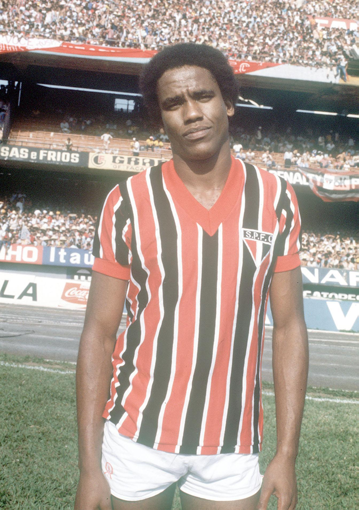
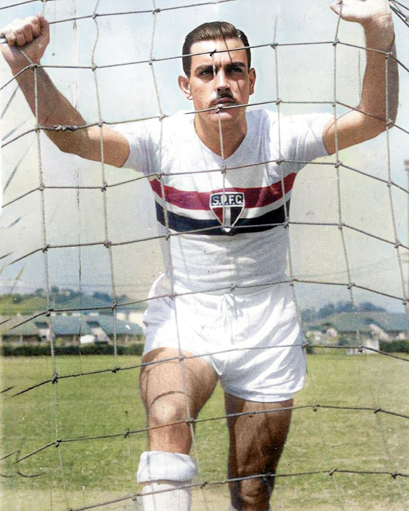
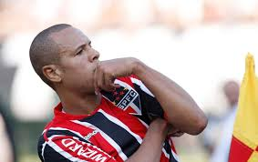
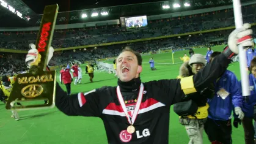

<!-- <!DOCTYPE html>
<html lang="en">

<head>
    <meta charset="UTF-8">
    <meta name="viewport" content="width=device-width, initial-scale=1.0">
    <link rel="icon" href="img/spfc.png" type="image/png">
    <link rel="stylesheet" href="extensao.css">
    <title>São Paulo FC</title>
</head>

<body>

    <header id="header">
        <div class="container-header">
            <div class="logo">
                <h1 class="titulo-header">São Paulo FC</h1>
            </div>
            <nav class="navbar">
                <a href="#" class="nav-link">Home</a>
                <a href="#" class="nav-link">Ídolos</a>
                <a href="#" class="nav-link">Títulos</a>
                <a href="#" class="nav-link">Contato</a>
            </nav>
        </div>
    </header>
    <h1>História do São Paulo Futebol Clube</h1>

    <p>Fundado em 25 de janeiro de 1930 e marcado por histórias de superação, como a refundação do clube em 1935 ou os
        tempos difíceis da construção do Morumbi, o tricolor mais querido do planeta é o único clube brasileiro a ter
        conquistado a América e o mundo por três vezes. É ainda o único tricampeão consecutivo do campeonato brasileiro
        e o primeiro a conquistá-lo por seis vezes. Tri-Hexacampeão Brasileiro.</p>
    
    <hr>

    <h2>Maiores artilheiros</h2>
    <ul class="jogadores">
        <li"><a href="https://www.transfermarkt.com.br/serginho-chulapa/profil/spieler/135361">Serginho Chulapa</a>: 242
            gols</li> 
            <li><a href="https://www.transfermarkt.com.br/gino-orlando/profil/spieler/295874">Gino Orlando</a>: 233 gols
            </li> 
            <li><a href="https://www.transfermarkt.com.br/luis-fabiano/profil/spieler/19082">Luis Fabiano</a>: 212 gols
            </li>

    </ul>

    <h2>Maior goleiro de todos os tempos</h2>
    
    <p>Confira um pouco da história de Rogério Ceni <a href="https://www.imdb.com/pt/name/nm4684551/bio/">aqui</a> </p>


    <hr>

    <h2>Momento em que o Tricolor paulista foi tricampeão mundial</h2>
    <iframe width="560" height="315" src="https://www.youtube.com/embed/LvlqKd1otEo?si=Nte-ilZiWYMxpp9P"
        title="YouTube video player" frameborder="0"
        allow="accelerometer; autoplay; clipboard-write; encrypted-media; gyroscope; picture-in-picture; web-share"
        referrerpolicy="strict-origin-when-cross-origin" allowfullscreen></iframe>

    <hr>

    <h2>Morumbi</h2>
    <p>O Estádio do Morumbi, oficialmente chamado Estádio Cícero Pompeu de Toledo, é um dos mais icônicos estádios de
        futebol do Brasil. Localizado na cidade de São Paulo, o Morumbi é a casa do São Paulo Futebol Clube e é
        conhecido por sua arquitetura imponente e capacidade para receber grandes públicos. O estádio foi inaugurado em
        1960 e desde então tem sido palco de inúmeros jogos memoráveis, tanto nacionais quanto internacionais. Com uma
        capacidade que pode chegar a mais de 67 mil espectadores, o Morumbi é um símbolo do futebol paulista e
        brasileiro, sendo um local onde a paixão pelo esporte é vivida intensamente pelos torcedores tricolores.</p>
    <iframe
        src="https://www.google.com/maps/embed?pb=!1m18!1m12!1m3!1d3656.092709977722!2d-46.72003940000004!3d-23.6010078!2m3!1f0!2f0!3f0!3m2!1i1024!2i768!4f13.1!3m3!1m2!1s0x94ce56c31b1fe649%3A0x7d134f4dfc6618c2!2sEst%C3%A1dio%20MorumBIS!5e0!3m2!1spt-BR!2sbr!4v1771889193461!5m2!1spt-BR!2sbr"
        width="400" height="300" style="border:0;" allowfullscreen="" loading="lazy"
        referrerpolicy="no-referrer-when-downgrade"></iframe>

    <hr>

    <h2>Vídeo de comemoração do título da Copa do Brasil de 2023</h2>
    <iframe width="560" height="315" src="https://www.youtube.com/embed/T_HYY9jQnF4?si=J1yhpttrvrO8rt4i"
        title="YouTube video player" frameborder="0"
        allow="accelerometer; autoplay; clipboard-write; encrypted-media; gyroscope; picture-in-picture; web-share"
        referrerpolicy="strict-origin-when-cross-origin" allowfullscreen></iframe>
</body>

</html> -->